For ray generation, and we wish to find the ray from the camera origin to a point on the
virtual camera sensor (which is defined to be the z = -1 plane) that corresponds to a
normalized (x, y) coordinate of an image. In order to do that, we first find the
camera_x and camera_y. Knowing the coordinates of the bottom
left corner and the top right corner of the virtual camera sensor, all we need to do is
scale the (x, y) coordinate in the image by the width and the height of the virtual
camera sensor. Then, we can create a ray with origin at pos and direction
at (camera_x, camera_y, -1). As part of the rendering pipeline,
we cast rays from the camera origin in order to find intersection points with the scene,
and from the colors at the intersection points, we can figure out the color to assign each pixel.
Ray and primitive intersection is used as part of the base case in bounding volume hierarchy's
intersection function, and bounding volume hierarchy is used when finding intersection point
of the camera rays and the surfaces in the scene.
For ray-triangle intersection, we used the Möller Trumbore algorithm. We first found the time
t at which the ray intersects the plane that the triangle lies in, and then we
calculated the Barycentric coordinate of the point of intersection. If the three vertices of the
triangle are defined to be P_0, P_1, P_2 and the ray is
defined by origin O and a direction D. Let's define some variables here:
E_1 = P_1 - P_0, E_2 = P_2 - P_0, S = O - P_0,
S_1 = D x E_2, S_2 = S x E_1. Time of intersection t is
given by (S_2 * E_2) / (S_1 * E_1). beta of the Barycentric coordinates
is given by (S_1 * S) / (S_1 * E_1). gamma of the Barycentric
coordinates is given by (S_2 * D) / (S_1 * E_1). alpha is given by
1 - beta - gamma. If one of the alpha, beta, and
gamma values is less than 0, then this point of intersection is outside the triangle,
which means that the triangle does not actually intersect with the ray. If the t
is smaller than the ray's min_t value of greater than the ray's max_t
value, then the ray also does not intersect the triangle. If the ray does intersect the triangle,
then we update the intersection's t value to be the t we found, and its
normal n to be an interpolation of the normals at the vertices. We also update the ray's
max_t value to be the intersection time as it is between the old min_t and
max_t.
Below are images with normal shading for banana.dae, CBempty.dae, and CBspheres.dae:


We constructed the BVH by recursively splitting the primitives into nodes until the number of
primitives within a node is at most max_leaf_size. In our construct_bvh
function, we first calculated the smallest bounding box that encloses all primitives given in
the function arguments. This was the bounding box for this particular BVHNode.
To determine which axis to split the box on, we simply used the axis along which the bounding
box was longest; this axis was likely the best axis along which to split the primitives, since
it allows the bounding box for each node to be roughly close to a cube (equal lengths in all axes).
We split the primitives by sorting the list of primitives by their centroids along this axis, and
then splitting the list in half. This ensures that we always get an even split of primitives in
the left and right children of our node, so our tree stays roughly balanced.
Below, we show renderings of four large files that rendered in a matter of seconds with BVH acceleration.
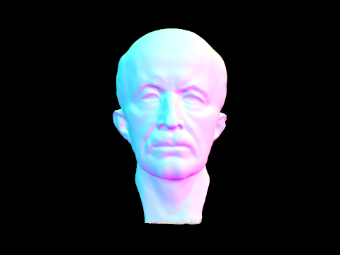 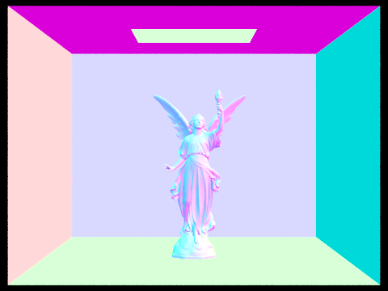 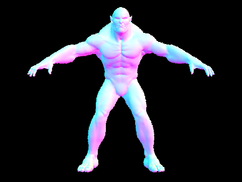 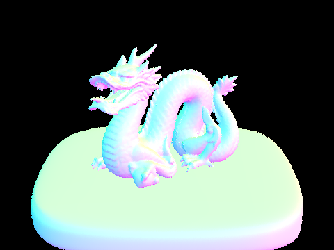Rendering cow.dae using BVH acceleration took 0.189 seconds. Rendering the same scene without BVH acceleration took 58.6 seconds. As another example, the file beetle.dae took 100.3 seconds without BVH acceleration, while it took only 0.195 seconds with BVH. The BVH data structure drastically speeds up the rendering process, since we can now check for ray intersections in O(log n) time instead of O(n) time.
Our at_least_one_bounce_radiance function was called recursively each time a
ray intersected an object. The function would call one_bounce_radiance to compute
the direct illumination at that point, and then samples a random direction for the next bounce.
The recursion continues until the ray does not intersect any other object, if the maximum ray
depth is reached, or by chance due to Russian Roulette termination (each ray bounce terminates
with probability 0.3 in our implementation). We use the Ray::depth field to keep
track of the number of bounces; the first ray from the camera starts at max_ray_depth
and is decremented by 1 each time we bounce a light ray off an object.
Some examples of images rendered with global illumination are below. All of these images use 1024 samples per pixel. We can notice that we can see more light in places where the light source is not directly hitting the object; this is from indirect illumination.
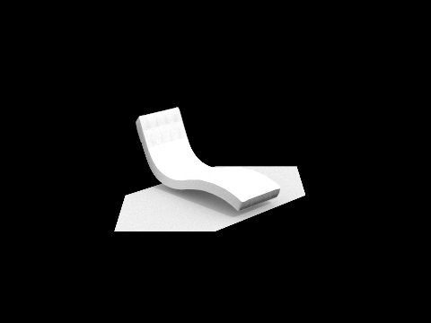 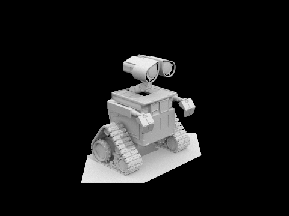The following images show the CBbunny.dae scene. The first image shows only direct illumination (light from a light source bouncing directly off an object), while the second scene shows only indirect illumination (light that is bounced off of non-light sources).
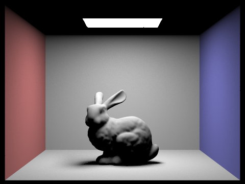 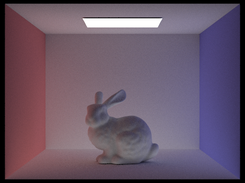
The next images show the CBbunny.dae scene with max_ray_depth set to various levels.
As we increase the ray depth, the image appears brighter because there is more light bouncing around
the scene. The effect diminishes as we keep increasing the maximum ray depth because light diminishes in
intensity after repeatedly bouncing off of surfaces. Additionally, in the last image, since we are
using Russian roulette to terminate light rays, there are likely no rays that actually reach the maximum
ray depth of 100.
Maximum ray depth = 0:
Maximum ray depth = 1:
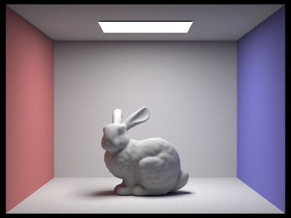Maximum ray depth = 2:
Maximum ray depth = 3:

Maximum ray depth = 100:
In the next few images, we rendered the CBspheres.dae scene with various sample-per-pixel rates. As we increase the sample rate, the image becomes less grainy and more clear, since there is less variance in the colors when we increase the number of samples per pixel.
1 sample per pixel:
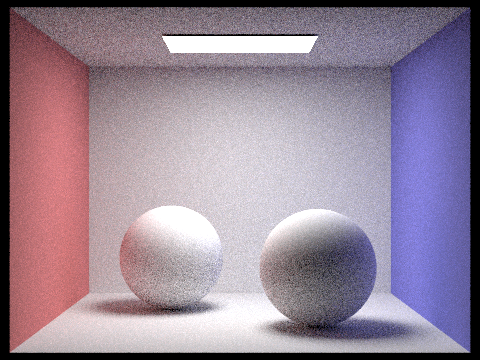2 samples per pixel:
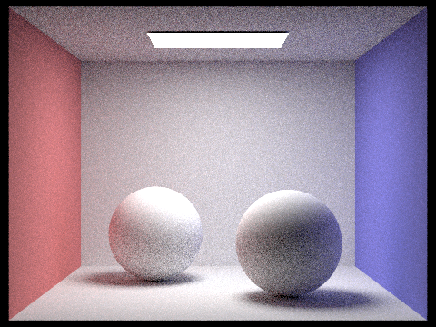4 samples per pixel:
8 samples per pixel:
16 samples per pixel:
64 samples per pixel:
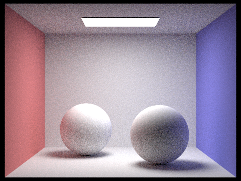1024 samples per pixel:
In our implementation of adaptive sampling, we stored variables I (a value that measures whether
or not the color of the pixel has converged), s1 (the sum of the illumination
of the colors), s2 (the sum of the color's illumination squared), mu (the average
illumination of all the samples so far), sigma (the standard deviation of the illumination of all
the samples so far), and total_samples (which is the total number of samples we have taken so far).
We have a large do-while loop which terminates only when the variable I is smaller or equal to
maxTolerance multiplied by mu or if the total number of samples collected total_samples
is greater or equal to ns_aa which is the maximum number of samples we should collect in a pixel in total.
Inside the do-while loop, we have a for loop that samples rays samplesPerBatch number of times. In each
iteration of the for loop, we increment s1 and s2 accordingly (s1 is
incremented by the illumination of the color sampled, and s2 is incremented by the square of the
illumination of the color sampled). After collecting all the samples in a batch, we update the I
value of all the samples collected thus far to be 1.96 * sigma / sqrt(total_samples)
where mu is given by s1 / total_samples and sigma is given by
sqrt((s2 - s1 * s1 / total_samples) / (total_samples - 1)). We repeat this until the color converges.
The following images show the CBbunny.dae scene rendered with 2048 samples per pixel. The image to its right is the
sampling rate image which displays variation in sampling rate in different regions of the image. The max_ray_depth
is set to 5 and sample per area light is set to 1.